Acides et bases, définition de Brönsted
Acide
Un acide est une espèce chimique, ionique ou moléculaire, susceptible de céder au moins un proton $\ce{H+}$. De façon formelle, on peut traduire ce comportement par une demi-équation : $$ \ce{AH = A^- + H^+} $$
Remarque : Noter la similitude formelle entre les acides et les réducteurs (cf. cours de première) dont la demi-équation formelle est : $$ \ce{ {Red} = {Ox} + n e- } $$
- L’acide éthanoïque $\ce{CH_3-CO_2H}$ est un acide. Écrire la demi-équation qui traduit ce comportement.
Réponse
$$\underset{\text{acide éthanoïque}}{\ce{CH_3-CO_2H}} =\underset{\text{ion éthanoate}}{\ce{CH_3-CO_2^-}} + \ce{H^+}$$
- Le chlorure d’hydrogène $\ce{HCl}$ est un acide. Écrire la demi-équation qui traduit ce comportement.
Réponse
$$\underset{\text{chlorure d’hydrogène}}{\ce{HCl}} = \underset{\text{ion chlorure}}{\ce{Cl^-}} + \ce{H^+}$$
- L’ion méthylammonium $\ce{CH_3-NH_3^+}$ est un acide. Écrire la demi-équation qui traduit ce comportement.
Réponse
$$\underset{\text{ion méthylammonium}}{\ce{CH_3-NH_3^+}} = \underset{\text{méthylamine}}{\ce{CH_3-NH_2}} + \ce{H^+}$$
- Le dioxyde de carbone dissous $\ce{CO_2,H_2O}$ est un acide. Écrire la demi-équation qui traduit ce comportement.
Réponse
$$ \underset{\text{dioxyde de carbone dissous}}{\ce{CO_2,H_2O}} = \underset{\text{ion hydrogénocarbonate}}{\ce{HCO_3^-}} + \ce{H^+} $$
- L’acide sulfurique $\ce{H_2SO_4}$ est un diacide. Écrire la demi-équation qui traduit ce comportement.
Réponse
$$ \underset{\text{acide sulfurique}}{\ce{H_2SO_4}} = \underset{\text{ion sulfate}}{\ce{SO_4^{2-}}} + \ce{2H^+} $$
Base
Une base est une espèce chimique, ionique ou moléculaire, susceptible de capter au moins un proton $\ce{H+}$. De façon formelle, on peut traduire ce comportement par une demi-équation : $$ \ce{B + H^+ = BH^+} $$
- L’ammoniac $\ce{NH_3}$ est une base. Écrire la demi-équation qui traduit ce comportement.
Réponse
$$ \underset{\text{ammoniac}}{\ce{NH_3}} + \ce{H+} = \underset{\text{ion ammonium}}{\ce{NH_4^+}} $$
- L’ion hydroxyde $\ce{HO^-}$ est une base. Écrire la demi-équation qui traduit ce comportement.
Réponse
$$ \underset{\text{ion hydroxyde}}{\ce{HO^-}} + \ce{H+} = \underset{\text{eau}}{\ce{H_2O}} $$
- L’ion carbonate $\ce{CO_3^{2-}}$ est une base. Écrire la demi-équation qui traduit ce comportement.
Réponse
$$ \underset{\text{ion carbonate}}{\ce{CO_3^{2-}}} + \ce{H+} = \underset{\text{ion hydrogénocarbonate}}{\ce{HCO_3^-}} $$
- L’ion éthanoate $\ce{CH3-CO2^-}$ est une base. Écrire la demi-équation qui traduit ce comportement.
Réponse
$$ \underset{\text{ion éthanoate}}{\ce{CH_3-CO_2^-}} + \ce{H^+} = \underset{\text{acide éthanoïque}}{\ce{CH3-CO2H}} $$
- La méthylamine $\ce{CH_3-NH_2}$ est une base. Écrire la demi-équation qui traduit ce comportement.
Réponse
$$ \underset{\text{méthylamine}}{\ce{CH_3-NH_2}} + \ce{H^+} = \underset{\text{ion méthylammonium}}{\ce{CH_3-NH_3^+}} $$
Couple acide/base
- À partir des exemples précédents, on remarque que lorsqu’un acide cède un proton, la nouvelle espèce chimique formée est une base.
- De même, lorsqu’une base capte un proton, la nouvelle espèce chimique créée est un acide.
Couple acide-base
S’il existe entre un acide et une base une relation formelle du type : $$ \ce{ {acide} = {base} + H^+ } $$ on dit que l’acide et la base sont conjugués. Ils forment alors un couple acide/base.
Exemple
L’ion hydrogénocarbonate est amphotère ; il appartient aux deux couples : $$ \underset{ \text{dioxyde de carbone dissous} }{ \ce{CO2,H2O} } / \underset{ \text{ion hydrogénocarbonate} }{ \ce{HCO_3^-} } $$
$$ \underset{ \text{ion hydrogénocarbonate} }{ \ce{HCO_3^-} } / \underset{ \text{ion carbonate} }{ \ce{CO_3^{2-} }} $$
- Donner le couple acide-base de l’acide éthanoïque $\ce{CH_3-CO_2H}$.
Réponse
$\ce{CH_3-CO_2H / CH_3-CO_2^-}$
- Donner le couple acide-base du chlorure d’hydrogène $\ce{HCl}$.
Réponse
$ \ce{HCl / Cl^-} $
- Donner le couple acide-base de l’ion méthylammonium $\ce{CH_3-NH_3^+}$.
Réponse
$ \ce{CH_3-NH_3^+ / CH_3-NH_2} $
- Donner le couple acide-base du dioxyde de carbone dissous $\ce{CO_2,H_2O}$.
Réponse
$ \ce{CO_2,H_2O / HCO3^-} $
- Donner le couple acide-base de l’ion ammonium $\ce{NH_4^+}$.
Réponse
$ \ce{NH_4^+ / NH3} $
- L’ion oxonium $\ce{H3O^+}$ est un acide. Donner le couple acide-base de l’ion ammonium.
Réponse
$ \ce{H3O^+ / H_2O} $
- L’ion hydroxyde $\ce{OH^-}$ est une base. Donner le couple acide-base auquel appartient l’ion hydroxyde.
Réponse
$ \ce{H_2O / OH^-} $
- Quelle particularité présente l’eau d’un point de vue acido-basique ?
Réponse
L’eau est un ampholyte.
Couples de l’eau
L’eau est une molécule amphotère,
- c’est la base du couple $ \ce{H3O^+ / H2O} $ (ion oxonium / eau) ;
- c’est l’acide du couple $ \ce{H2O / OH^-}$ (eau / ion hydroxyde).
Réaction acide-base, équation associée
Action de l’acide éthanoïque sur l’eau
On verse de l’acide éthanoïque pur dans cuve à électrolyse faisant partie d’un circuit électrique comprenant aussi un générateur, une résistance et un ampèremètre en série.
- L’ampèremètre ne révèle la circulation d’aucun d’un courant électrique.
On ajoute avec précaution de l’eau dans la cuve à électrolyse.
- L’ampèremètre révèle la circulation d’un courant électrique.
On verse quelques gouttes de BBT dans la solution.
- La solution se colore en jaune.
Interpréter chacune des observations.
Interprétation de l’expérience
-
Le liquide, pur, est constitué de molécules, édifices non chargés. Le courant électrique étant un déplacement d’ensemble de charges électriques, il est normal qu’aucun courant ne circule dans le circuit électrique.
-
Puisqu’un courant électrique circule dans le circuit, on peut en déduire que des charges électriques (ions) sont apparues dans le liquide qui est devenu une solution ionique.
L’acide éthanoïque a réagit avec l’eau. -
Le bleu de bromothymol (BBT) est un indicateur coloré qui colore en jaune les solutions acides.
L’acidité d’une solution est liée à la concentration en ions oxonium $\ce{H3O^+}$. La réaction chimique entre l’acide éthanoïque et l’eau a, entre autres, formé des ions oxonium.
En conclusion
L’eau semble avoir capté un proton $\ce{H^+}$ puisque l’ion oxonium $\ce{H3O^+}$ est apparu. La réaction entre l’acide éthanoïque et l’eau est donc une réaction acido-basique. Son équation est : $$ \ce{CH_3-CO_2H_{(aq)} + H_2O <=> CH3-CO2^-_{(aq)} + H3O^+ } $$
On reconnaît l’équation d’une réaction entre l’acide du couple acide éthanoïque/ion éthanoate et la base du couple ion oxonium/eau :
$$ \begin{array}{ccc} \ce{CH_3-CO_2H} & = & \ce{CH3-CO2^- + H^+} \cr \ce{H2O + H^+} & = & \ce{H3O^+} \cr \hline \ce{CH3-CO2H + H2O} & \ce{<=>} & \ce{ CH2CO2^- + H3O^+ } \cr \end{array} $$
Réaction acido-basique
Une réaction acide-base met en jeu un transfert de protons $\ce{H^+}$ entre l’acide d’un couple et la base d’un second couple : $$ \ce{ HA1 + A2^- <=> A1^- + HA2 } $$
- Le chlorure d’hydrogène, acide du couple $\ce{ HCl / Cl^- }$, réagit avec l’eau. Écrire l’équation de la réaction chimique, sachant qu’il s’agit d’une réaction acide-base.
Réponse
- L’eau joue ici le rôle de la base, elle appartient donc au couple $\ce{ H3O^+ / H2O }$.
- $ \ce{HCl + H2O -> Cl^- + H3O^+} $
- L’acide nitreux $\ce{HNO2}$, acide du couple $\ce{HNO2 / NO2^-}$, réagit avec l’ammoniac $\ce{NH3}$, base du couple $\ce{NH4^+ / NH3}$. Écrire l’équation de la réaction chimique entre ces deux entités.
Réponse
$ \ce{ HNO2 + NH3 -> NO2^- + NH4^+} $
- Les ions oxonium réagissent avec les ions hydroxyde. Écrire l’équation de la réaction chimique entre ces deux entités.
Réponse
$ \ce{ H3O^+ + OH^- -> 2 H2O} $
La transformation modélisée par la réaction des ions oxonium $\ce{H3O^+}$ avec les ions hydroxyde $\ce{OH^-}$ est totale et exothermique.
Il faut toujours prendre beaucoup de précautions lorsqu’on mélange des solutions concentrées de cet acide et de cette base (ou plus généralement d’un acide fort et d’une base forte) car un mélange trop rapide peut conduire à une ébullition locale et donc à des projections.
Il ne faut donc jamais verser brutalement d’eau dans un acide fort concentré, les projections étant alors acides !
Définition du pH d’une solution aqueuse
L’introduction d’un acide dans l’eau conduit toujours à la formation d’ions oxonium $\ce{ H3O^+ }$. La concentration des ions oxonium caractérise donc le caractère acide ou basique d’une solution. Cette concentration peut varier de quelques moles par litre à $\pu{1E-14 mol/L}$, ce qui est difficile à appréhender.
En 1909, le chimiste danois Sörensen a introduit une grandeur sans unité plus pratique que la concentration en ions $\ce{ H3O^+ }$.
pH (potentiel hydrogène)
Pour des solutions diluées ($[ \ce{H3O^+} ] \leqslant \pu{5.0e-2 mol.L-1}$), le pH est exprimé par la relation
$$ \ce{pH} = - \log \left( \dfrac{[ \ce{H3O^+} ]}{C_0} \right) $$
où $C_0$ est une concentration de référence telle que $C_0 = \pu{1,0 mol.L-1}$.
Cette relation est équivalente à
$$ [ \ce{H3O^+} ] = C_0 \, 10^{- \ce{pH}} $$
Remarques
- Dans le solvant eau, l’échelle de pH est constituée de valeurs comprises entre 0 et 141.
- Lorsque la concentration en ions oxonium augmente, le pH diminue.
Détermination du pH d’une solution
Pour déterminer le pH d’une solution, on peut utiliser :
- Un indicateur coloré ;
- Du papier pH ;
- Un pH-mètre.
Remarques
- Il est nécessaire d’étalonner un pH-mètre avant toute mesure.
- Vue la précision d’un pH-mètre, toute concentration déduite d’une mesure de pH doit être exprimée avec deux chiffres significatifs au maximum.
Pourquoi certaines entités sont-elles capables de céder un proton alors que d’autres entités sont capables de capter un proton ?
Acide carboxylique, ion carboxylate
L’acide acétique (nom officiel : acide éthanoïque) est un acide carboxylique.
- Représenter le schéma de Lewis de l’acide éthanoïque.
- Entourer le groupe caractéristique de cette molécule et donner son nom.
- Rappeler l’équation formelle liant l’acide éthanoïque et sa base conjuguée, l’ion éthanoate.
- En déduire le schéma de Lewis de l’ion éthanoate.
- Donner le schéma de Lewis de l’ion hydroxyde, base du couple eau/ion hydroxyde.
- Utiliser les notions d’électronégativité et de polarisation des liaisons pour expliquer pourquoi l’acide éthanoïque peut par exemple réagir avec les ions hydroxyde (cf. les documents au bas de cette page).
Réponses
- 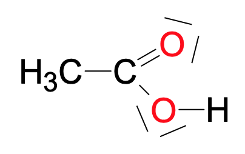
-
Il s’agit du groupe carboxyle. 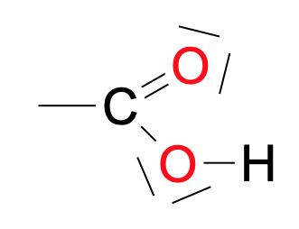
-
$\ce{CH_3-CO_2H = CH_3-CO_2^- + H^+}$
-
Ion éthanoate : 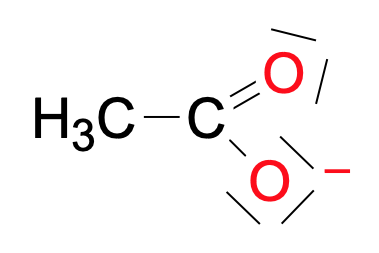
-
Ion hydroxyde : 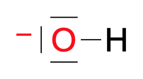
- L’atome d’oxygène lié à l’atome d’hydrogène du groupe carboxyle est beaucoup plus électronégatif que l’atome d’hydrogène. La liaison $\ce{O-H}$ est donc polarisée, l’atome d’oxygène porte une charge partielle $\delta^-$ (zone riche en électrons) et l’atome d’hydrogène une charge partielle $\delta +$ (zone en déficit d’électrons).
La zone de l’espace autour de l’atome d’hydrogène est une zone pauvre en électrons. - L’ion hydroxyde est un anion dans lequel l’atome d’oxygène, déjà plus électronégatif que l’atome d’hydrogène, possède un électron périphérique supplémentaire (comparativement au nombre d’électrons périphériques que possède normalement un atome d’oxygène). La zone de l’espace autour de l’atome d’oxygène est riche en électrons.
- Une entité qui possède un atome portant une charge partielle négative ou une charge négative peut interagir avec l’atome d’hydrogène d’un groupe carboxyle ; une nouvelle liaison se forme entre ces atomes. Dans le même temps, l’atome d’oxygène récupère le doublet de l’ancienne liaison avec l’atome d’hydrogène. 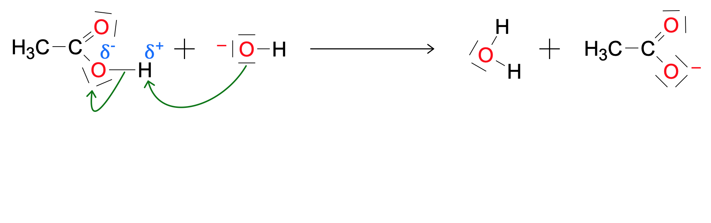
Visualisation des densités électroniques
- Légende :
- plus la couleur est bleue, plus la zone est pauvre en électrons ;
- une couleur verte illustre une zone neutre ;
- plus la couleur est rouge, plus la zone est riche en électrons.
Eau 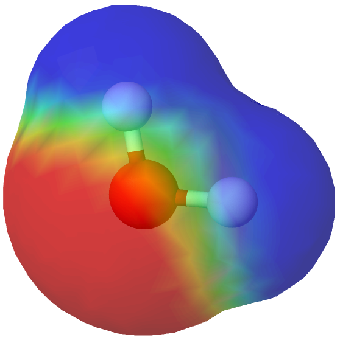 Ion oxonium 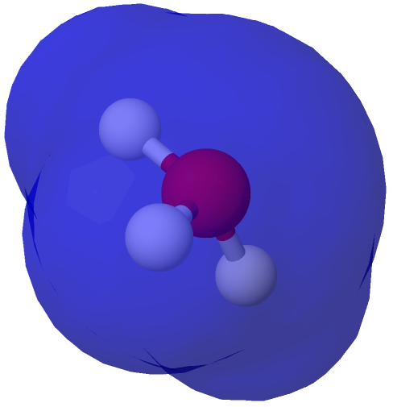 Acide éthanoïque 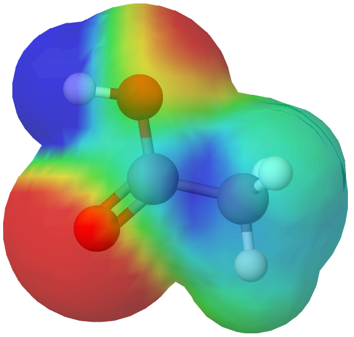 Acide butanoïque 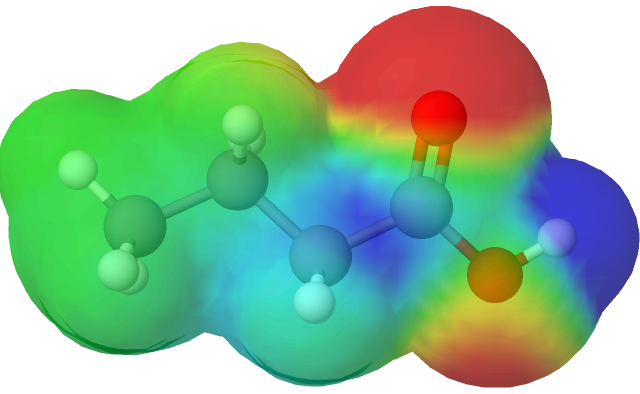
Amine
Une amine est un composé organique dérivé de l’ammoniac $\ce{NH3}$ dont au moins un atome d’hydrogène a été remplacé par un groupe carboné. […] On parle d’amine primaire, secondaire ou tertiaire selon qu’il y a un, deux ou trois radicaux (ou groupements) liés à l’atome d’azote.
Amine
-
Donner la formule de Lewis de l’ammoniac.
-
Donner la formule de Lewis de la méthylamine.
-
Donner la formule de Lewis de la triméthylamine.
-
L’ion ammonium est l’acide conjugué de l’ammoniac. Donner la formule de Lewis de l’ion ammonium.
-
Donner la formule de Lewis de l’ion oxonium, acide du couple ion oxonium/eau.
-
Utiliser les notions d’électronégativité et de polarisation des liaisons pour expliquer pourquoi l’ammoniac peut par exemple réagir avec les ions oxonium (cf. les documents au bas de cette page).
Réponses
- 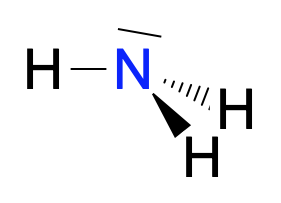
- 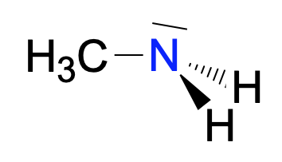
- 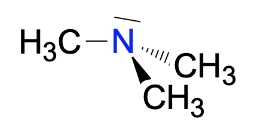
- 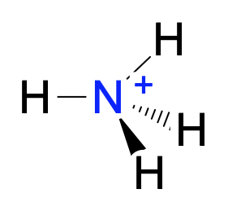
- 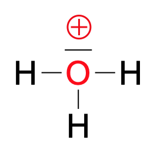
- Dans la molécule d’ammoniac, l’atome d’azote est plus électronégatif que les atomes d’hydrogène ; les liaisons sont donc toutes polarisées et l’atome d’azote porte une charge partielle négative $\delta^-$. (La molécule est polaire.) La zone de l’espace autour de l’atome d’azote est une zone riche en électrons.
- L’ion oxonium est un cation dans lequel il manque à l’atome d’oxygène, pourtant plus électronégatif que les atomes d’hydrogène, un électron périphérique. Les liaisons sont donc fortement polarisées et les atomes d’hydrogène portent des charges partielles positives. La zone de l’espace autour des atomes d’hydrogène sont des zones pauvres en électrons.
- La zone riche en électrons de l’atome d’ammmoniac peut réagir avec l’une des zones pauvres en électrons de l’ion oxonium ; une nouvelle liaison se forme alors. Simultanément, l’oxygène de l’ion oxonium récupère le doublet liant et se retrouve alors avec le bon nombre d’électrons. 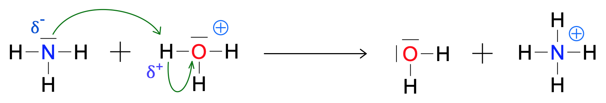
Visualisation des densités électroniques
- Légende :
- plus la couleur est bleu, plus la zone est pauvre en électrons ;
- une couleur verte illustre une zone neutre ;
- plus la couleur est rouge, plus la zone est riche en électrons.
Ammoniac $\ce{NH3}$ 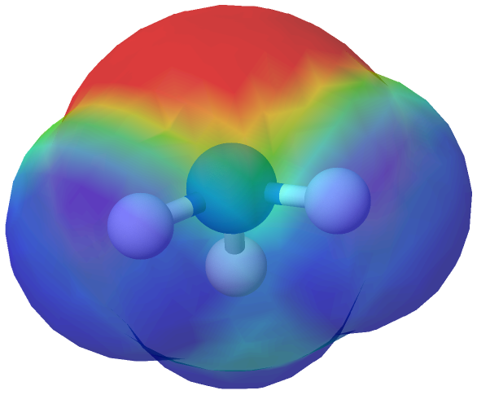
Éthylamine $\ce{CH3-CH2-NH2}$ 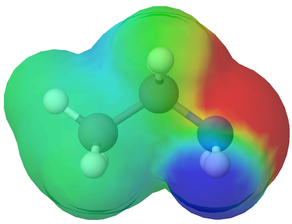
N-methylethylamine $\ce{CH3-CH2-NH-CH3}$ 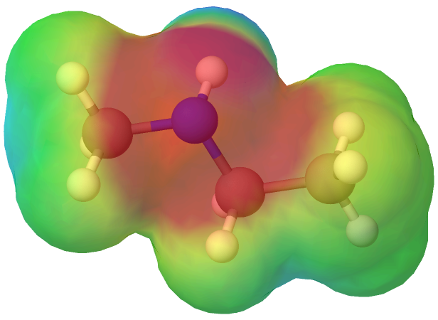
Triméthylamine 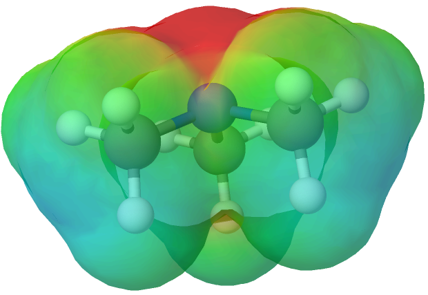
Ion ammonium $\ce{NH4^+}$ 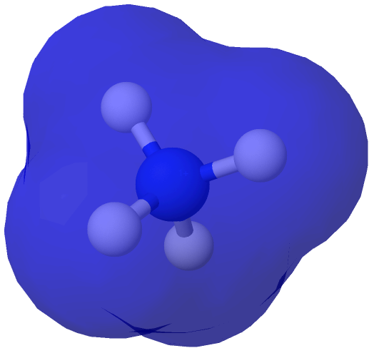
Électronégativité, polarisation d’une liaison, caractère polaire d’une molécule
- L’électronégativité d’un atome est une grandeur physique qui caractérise sa capacité à attirer les électrons lors de la formation d’une liaison chimique avec un autre élément.
- La différence d’électronégativité entre ces deux éléments détermine la nature de la liaison covalente : liaison non polarisée lorsque la différence d’électronégativité est nulle ou faible, liaison polarisée quand la différence d’électronégativité est moyenne, et ionique quand la différence d’électronégativité est tellement grande qu’un des atomes a attiré complètement, ou presque, les électrons de la liaison : les atomes sont devenus des ions et portent des charges électriques entières.
- Une molécule au sein de laquelle au moins une liaison est polarisée peut être polaire, c’est à dire voir le centre d’équilibre des charges positives ne pas coïncider avec le centre d’équilibre des charges négatives.
Échelle des électronégativités
Une table des électronégativités se trouve sur Wikipédia.
Quelques connaissances peuvent cependant être utiles pour résoudre les exercices :
- Comment évolue l’électronégativité des élements au sein d’une même période ?
Réponse
L’électronégativité augmente lorsqu’on parcourt une période de la gauche vers la droite.
- Comment évolue l’électronégativité des éléments au sein d’une même famille ?
Réponse
L’électronégativité diminue lorsqu’on parcourt une famille de haut en bas.
- Quel est l’élément le plus électronégatif ?
Réponse
L’élément le plus électronégatif est donc le fluor. Rappel : les gaz rares ne réagissent que très peu. Il n’est donc pas question de parler d’électronégativité en ce qui les concerne, dans le cas général.
- Que peut penser, du point de vue de l’électronégativité, des atomes d’oxygène et d’azote, comparativement aux atomes de carbone et d’hydrogène (dont on considère qu’ils possède sensiblement la même électronégativité).
Réponse
Les électronégativités des atomes d’oxygène et d’azote sont supérieures à celles des atomes de carbone et d’hydrogène. Les liaisons $\ce{O-H}$, $\ce{N-H}$, $\ce{O-C}$ et $\ce{N-C}$ sont polarisées.
Comment déterminer si une molécules est polaire ?
graph LR;
B(Liaisons polarisées) --> C{Nbre ?}
C -->|0| F[Molécule apolaire]
C -->|1| D[Molécule polaire]
C -->|> 1| E[Il faut examiner la géométrie de la molécule]
-
Ceci sera démontré plus tard dans l’année. ↩︎